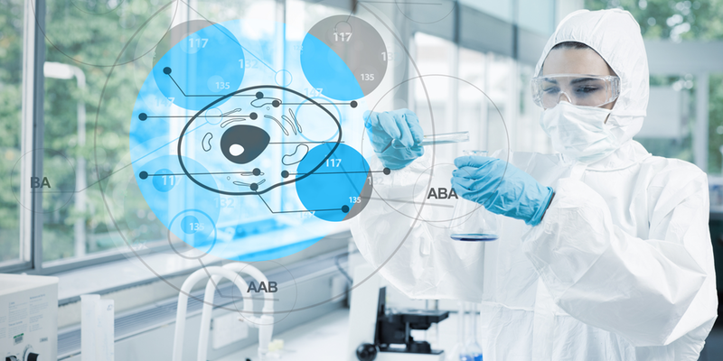

-
Choose your:
MEDICAL SPA AND FACIAL REJUVENATION

The science of beauty requires a delicate touch and understanding of the anatomical structure of both the face and body. At Regenerative Sports, Spine and Spa we focus equally on your overall well-being and desire to be beautiful. We specialize in using the most current and proven regenerative medical advances like stem cells and PRP (Platelet Rich Plasma) to enhance your beauty naturally. Our Medical Spa and Cosmetic Enhancement services include injectables and fillers, laser light source technology as well as regenerative medicine for the total regenerative spa experience.
- Stem Cell and PRP Facial Rejuvenation
- Botox Treatments for Migraine Headaches or Excessive Sweating Issues
- Dermal Fillers
- Microneedling
- Stem Cell and PRP for Vaginal and Penile Rejuvenation
- Facials
- Acne Facials
- Stem Cell and PRP for Hair Loss
SPORTS INJURY

At our Department of Regerenative medecine:
we will listen to your complains and determine the sources of your problem
and treat you comprehensively with both traditional and cutting edge
regenerative medicine, including steroid injections, nerve blocks and stem
cell/PRP (Platlet Rich Plasma) injections.
We pride ourselves in using the most innovative medical treatments
available, including traditional and regenerative medicine. Our goal is to
help return you to your life faster, stronger and more agile than you were
before you walked through our doors.
- BACK PAIN
- SHOULDER
- KNEE
- HIP
- WRIST
- ELBOW
- FACET PAIN
- SACROILIAC (SI) JOINT PAIN
- OSTEOARTHRITIS
- HEADACHES
- NEUROPATHY
- NECK PAIN
- SPINE
- Epidural Steroid Injections
- Regenerative and Stem Cell Treatments
- Facet Joint Injections
- Medical Branch Block
- Platlet Rich Plasma (PRP)
- Spinal Cord Stim Trials Low Back
- Stellate Ganglion Block
- Sympathetic Block
- Sacroiliac (SI) Joint Injection
- Radiofrequency for Spine, SI Joints, Knee
- Discogram
- Coccyx Injections
 millions OF people experience acute Back Pain. Most, if not all, is due to
some kind of sports injury, work related activity, or bad posture that
causes muscle strain which can trigger back spasms. This pain comes from
ligament damage or severe muscle strain, call our Practice for a
Regenerative médecine consult, our goal is to look at the whole person to
determine where the misalignments are occurring and to get back on the
right track.
millions OF people experience acute Back Pain. Most, if not all, is due to
some kind of sports injury, work related activity, or bad posture that
causes muscle strain which can trigger back spasms. This pain comes from
ligament damage or severe muscle strain, call our Practice for a
Regenerative médecine consult, our goal is to look at the whole person to
determine where the misalignments are occurring and to get back on the
right track.
our goal is to look at the whole person to determine where the misalignments are occurring. We have seen great success using the following regenerative medical treatments to relieve back pain:
PRP (Platlet Rich Plasma) Therapy: using a patient’s own blood, we take platlets, concentrate, condense and then process them, using growth factors from inside the platlets, which we then re-inject into the patient’s damaged tissue to stimulate tissue healing.
Platelet Lysate (PL) – A stem cell therapy, which is PRP’s more advanced cousin in a way. It’s very anti-inflammatory, so it can be used around nerves, and can offer relief for lower back pain, neck pain, or buttock and leg pain.
Our goal mainly is to help remove the pain so you get back on the road to optimum health. If you are experiencing moderate to severe back pain, please contact our office to schedule a personal and private consultation. We look forward to hearing about your struggles with back pain and developing a treatment plan specific to your needs.
Shoulder pain can reduce our ability to carry even the lightest of weights. we want to identify your actual range of motion before, during, and after using any treatment The goal is to establish a baseline of patient care and starting point for recovery. We want to help you return to your former self with a healthy range of motion. Whether your a professional athlete, semi pro, amatuer athelete, sports novice or someone trying to get back into shape. Stem cells is alwaysyour most cutting/edge solution to get you back to normal life activity
Typically, you first notice knee pain when that pain becomes a daily constant. Limping or favoring one leg to the other to reduce the pain of walking occurs, however this can lead to additional problems in the hips and leg joints. It is at this point that we recommend patients start tracking the pain levels in a log or diary, and look for triggers that cause episodes of pain. This allows a doctor to better understand how to address and to improve your condition and injury.
Keeping a knee pain log can help you and our doctors: Figure out pain patterns Better understand which therapies work Improve communication with your doctor
You want to measure the pain level and intensity when performing your normal activities or sport events. This will be especially critical if you play amateur or professional level sports on any meaningful level. From soccer, baseball, football, golf, hockey or track.
If you are experiencing moderate to severe knee pain, please contact our office to schedule a personal and private consultation. We look forward to hearing about your struggles with knee pain and developing a treatment plan specific to your needs. Our goal at Regenerative Sports, Spine & Spa is to help remove the pain so you get back on the road to optimum health.
Back problems can also lead to hip pain and problems, because typically if we are injured, we over compensate to reduce the pain by changing the way we walk and that contortion leads to hip strain and aggravation. With our stem cells therapy we can help you realign your walking motion by strengthening those core muscles and ligaments which affect the Hip and the Back both. So whether your a Pro Athlete, Semi Athlete, High School Athlete, or just trying to get back into shape after injury. Let us help you with our Regenerativemedecine to get you back on trackandrelieve your pain
Call our practice for a personalizedconsultation to elaborate the solution for your problem
Wrist and hand pain is very common, and often the result of repetitive motion. Everyday activities like typing, assembly work or racquet sports are a common culprit of wrist pain – often carpal tunnel syndrome.
PRP (Platlet Rich Plasma), humane amniotic fluid, or stem cell injections are effective treatment options for consistent pain related to carpal tunnel or other repetitive motion wrist injuries. Our goal is to develop a specific and personalized treatment plan to get you back on the road to optimum health and wellness, and we use state of the art techniques from a highly skilled and trained doctor.
If you’re suffering from painful wrist pain or a wrist injury pleasecall our office to learn more about our non-surgical regenerative treatment options.

Elbow pain can be caused by arthritis, golfer’s elbow or tennis elbow, whichis aninflammation that can cause pain and discomfort – the pain can spread to your forearm and wrist as well. It occurs from repeated stress and overuse from not just a golf or tennis swing, but can be from a number of overhead athletics (baseball, tennis, javelin), and some people who suffer from these conditions aren’t athletic at all. we offer patients state of the art, non-surgical options with PRP (Platlet Rich Plasma), humane amniotic fluid, or stem cell injections as effective ways for finding solutions to alleviate elbow pain. Platelet therapies use a concentrated form of a patient’s own blood, which promotes quick healing. Both PRP and stem cell injection therapies stimulate the body’s capacity for self-repair, and can help repair the tissues directly at the injury.
Our goal is to develop a specific and personalized treatment plan to get you back on the road to optimum health and wellness.If you’re suffering from crippling elbow pain, please contact our offices today to learn more about our non-surgical regenerative treatment options.
Facet Pain, also called osteoarthritis, can be extremely painful, and cause simple, everyday tasks, like sitting or riding in a car to be excruciating. Don’t let facet joint pain derail your active lifestyle – we can help you find a solution.
our team specializes in the field of regenerative medicine and non-surgical pain treatment options. After a thorough assessment and physical examination of your spine and facet joint, we will recommend the best course of action for your needs. This may include completing a facet joint injection, which is a diagnostic test that will help us determine if your pain is originating from that site. We offer several different treatments to relieve pain and reduce inflammation from corticosteroid injections that can provide pain relief over an extended period of time, to regenerative medicine; such as stem cell therapy which uses new cells to repair degenerated cartilage or PRP (Platelet Rich Plasma) to help naturally heal the inflamed tissue.
Regenerative healing therapies:
Stem Cell Therapy PRP TherapyOur facet pain treatment options:
Steroid injections, like as a facet joint injection Radiofrequency ablationour goal is to develop a specific and personalized treatment plan to relieve your chronic facet pain, and get you back on the road to optimum health and wellness. If you’re suffering from spinalpain that hasn’t responded to previous treatments, please contact our offices today to learn more about our non-surgical treatment options, which can provide lasting pain relief.
Many people suffer fromSacroiliac (SI) Joint Pain, which can be debilitating. It may cause a dull ache or sharp, stabbing pain in your lower back or legs.
One option that we offer to relieve pain and inflammation, is the SI Joint Injection. It contains a corticosteroid medication, and can provide pain relief over an extended period of time. We also offer regenerative medicine, such as stem cell therapy and PRP (Platelet Rich Plasma) to help naturally heal the inflamed tissue.
SI Joint painmay cause the following symptoms: Lower back or leg pain that is sharp or stabbing Thigh and/or buttock pain that possibly radiates down the sciatic nerve Pain is commonly experienced on one side of the body (but may occur on both sides) Radiating numbness or a tingling sensation from the lower spine to the back of the leg
our goal is to develop a specific and personalized treatment plan to relieve your chronic pain, and get you back on the road to optimum health and wellness. If you’re suffering from pain that hasn’t responded to previous treatments, please contact our offices today to learn more about our non-surgical treatment options, including a SI Joint Injection, which can provide lasting pain relief.
Traditional treatments for osteoarthritis has included exercise, weight loss if you are overweight – which seems to improve some OA symptoms, and medication like NSAIDs for inflammation or topical creams and gels. Unfortunately, these treatments are temporary and only address the pain, but not the symptom of OA. In contrast, Regenerative Medicine has shown surprising success in treating and relieving osteoarthritis.
our goal is to look at the whole person to determine where joint pain is occurring. We have seen great success using the following regenerative medical treatments to relieve osteoarthritis joint pain:
PRP (Platlet Rich Plasma) Therapy : using a patient’s own blood, we take platlets, concentrate, condense and then process them, using growth factors from inside the platlets, which we then re-inject into the patient’s damaged tissue to stimulate tissue healing.
Platelet Lysate (PL) – A stem cell therapy, which is PRP’s more advanced cousin in a way. It’s very anti-inflammatory, so it can be used around nerves, and can offer relief for lower back pain, neck pain, or buttock and leg pain.
we have a wide variety of treatments, and also offer Radiofrequency nerve ablation, SI (Sacroiliac Joint) and facet joint injections, as well as corticosteroid injections to relieve pain.
Our goal is to help remove your daily joint pain from osteoarthritis, so you can get back on the road to optimum health. If you are experiencing moderate to severe joint pain from osteoarthritis, please contact our office to schedule a personal and private consultation. We look forward to hearing about your struggles with joint pain and developing a treatment plan specific to your needs.
Frequent headaches may be a sign that you’re suffering from migraines. Severe headaches, such as migraines, can be caused by several stimulants: bright lights, strong smells, exhaustion blunt force trauma to the head, or neck injuries. The pain can also stem from surrounding tissues and nerves, muscles, ligaments and joints.
our expert team specializes in the field of regenerative medicine and non-surgical pain treatment options. After a thorough assessment and physical examination, we will recommend the best course of action to relieve your chronic headaches.
We offer several different treatments to relieve chronic migraine pain from Botox injections, which provide relief over an extended period of time by relaxing facial and head muscles, to radiofrequency nerve ablation and occipital nerve blocks, which can stop the transmission of pain signals and provide chronic headache relief.
Are you suffering from these chronic migraine symptoms?
Intense pulsing or throbbing pain Debilitating headaches 15 or more days per month Headaches that last from hours to daysour goal is to develop a specific and personalized treatment plan to relieve your chronic headaches, and get you back on the road to optimum health and wellness. If you’re suffering from frequent migraine headaches, and haven’t found relief with previous treatments or therapies, please contact our offices today to learn more about our treatment options, which can provide lasting pain relief.
COCCYX INJECTIONS
A Coccyx Injection is an anesthetic mixed with a steroid to reduce inflammation and pain. The injection is inserted into the tissue surrounding the coccyx, which the bottom portion of the spine at the tailbone. Pain relief can last for several years. If the first injection is effective at relieving pain, then patients may receive up to three injections in a year.If you’re suffering from the following symptoms, a Coccyx Injection may bring you longer-term pain relief: Localized pain and tenderness in the tailbone region Increased pain when sitting. Pain that worsens when moving from sitting to standing Pain that increases with bowel movement or sexual intercourse
our goal is to develop a specific and personalized treatment plan to get you back on the road to optimum health and wellness. If you’re suffering from tailbone pain that hasn’t responded to previous treatments, please contact our offices today to learn more about our non-surgical treatment options such as Coccyx Injection.
Neuropathy, also called Peripheral Neuropathy (PN),is either damage to or disease which affects nerves in the body. It affects about 6-7% of the population, and can be caused by systemic diseases such as diabetes, leprosy, vitamin deficiency, or certain medications (such as medications for chemotherapy). It may be a chronic, long-term condition where symptoms begin and progress slowly or begin suddenly and have a rapid progression.
Symptoms of neuropathy range depending on the specific type, but can include:
Numbness or a burning sensation (tingling) in the feet or hands Painful cramps Fine muscle twitching Muscle loss Changes in skin, hair and nails Bone degenerationTreatment for neuropathy has traditionally included physical therapy and primarily treating the root cause of the disease, for example treating diabetes with blood sugar management.
If traditional neuropathy treatments have not proven successful, then you may want to consider regenerative medicine, such as stem cell therapy. Stem cells bring an entirely new approach to chronic pain treatment, and in treating damaged nerves affected by neuropathy. Stem cells are unique in that they have the incredible ability to replicate and create new, healthy cells, while repairing damaged tissue. The best stem cells to use for neuropathy are embryonic, bone marrow or fat-derived.
The stem cell therapy procedure is relatively painless, using stem cells from the patient’s own body, and can provide lasting relief. First, the doctor will remove a bit of fat from your body – usually your leg or stomach. Next, the cells are processed using a centrifuge and incubator to isolate the adult stem cells from the fat cells. The isolated stem cells are then reinjected into the areas of the involved nerves and damaged tissues. Patients can expect relief in a few weeks to months following treatment.
Our goal is to get our patients back on the road to optimum health and wellness. If you are experiencing moderate symptoms associated with neuropathy, please contact our office to schedule a personal and private consultation. We look forward to hearing about your struggles with neuropathy, and developing a treatment plan specific to your needs.
Most people who experience neck pain are suffering from pain due to muscle strains, worn joints, nerve compression, injuries – such as car or sports injuries, or diseases like rheumatoid arthritis.
our goal is to look at the whole person to determine where the misalignments are occurring. We have seen great success using the following regenerative medical treatments to relieve neck pain:
PRP (Platlet Rich Plasma) Therapy : using a patient’s own blood, we take platlets, concentrate, condense and then process them, using growth factors from inside the platlets, which we then re-inject into the patient’s damaged tissue to stimulate tissue healing.
Platelet Lysate (PL) – A stem cell therapy, which is PRP’s more advanced cousin in a way. It’s very anti-inflammatory, so it can be used around nerves, and can offer relief for neck pain, lower back pain or buttock and leg pain.
Once injected, stem cells begin their job or restoring and rebuilding the diseased tissue or disc in the neck. Typically, patients will see results in about 3 weeks, and the inflammation starts to reduce and continues to do so for several months.
Our goal is to help remove the pain so you get back on the road to optimum health. If you are experiencing moderate to severe neck pain, please contact our office to schedule a personal and private consultation. We look forward to hearing about your struggles with neck pain and developing a treatment plan specific to your
we know that spinal discomfort and pain can have a dramatic impact on simple tasks, causing them to become excruciating. Spinal pain is often the result of sports injuries, taxing the back muscles beyond their ability, improper posture or standing or from something as simple as trying to catch your balance when tripping or falling. We understand that spinal pain can take the joy out of life, so let us help restore your mobility.